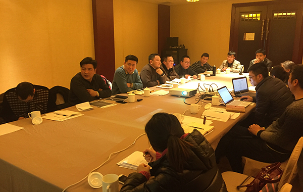
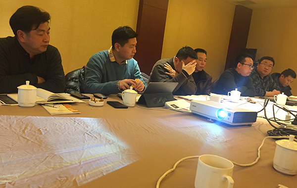
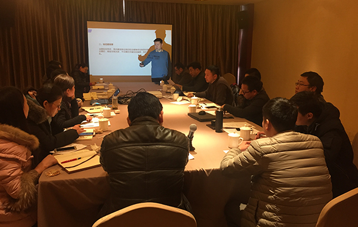
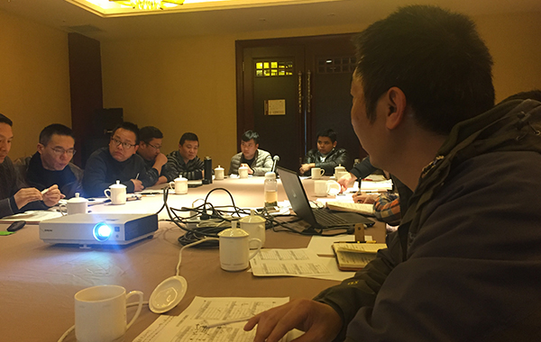

2018年1月13日，公司管理层在徐总经理的主持下召开了公司2018年管理层第6期会议，会议就以下几个议题进行了讲解、培训、讨论和通过：
1、 会议公布和讲评了2017年12月管理层绩效考评结果。人资部逐个分析了所有管理人员17年12月绩效考评成绩存在的不足和改进的方向，同时肯定了大家出色的能力和所取得的成绩。
2、 徐总经理就技术部项目管理系统结合公司实际案例深入全面阐述、培训了项目管理系统于公司发展所起到的重要作用和意义。
3、 评选了2017年公司优秀团队和公司优秀员工。
4、 会议审议并通过了2018年公司部门人员编制。
5、 会议审议确定了2018年公司各部门独立核算费用预算。



